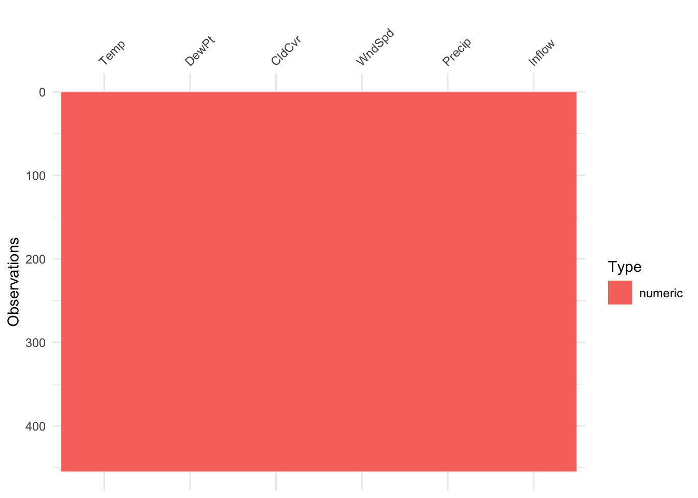

2 Practica utilizando astasa
Esto es una práctica para poder usar el paquete astasa
 Lake Shasta inflow data Description Lake Shasta inflow data This is a data frame.
Format A data frame with 454 observations (rows) on the following 6 numeric variables (columns): Temp, DewPt, CldCvr, WndSpd, Precip, Inflow.
Details The data are 454 months of measured values for the climatic variables: air temperature, dew point, cloud cover, wind speed, precipitation, and inflow, at Lake Shasta, California. The man-made lake is famous for the placard stating, “We don’t swim in your toilet, so don’t pee in our lake.”
fmri {astsa} R Documentation fMRI - complete data set Description Data (as a vector list) from an fMRI experiment in pain, listed by location and stimulus. The data are BOLD signals when a stimulus was applied for 32 seconds and then stopped for 32 seconds. The signal period is 64 seconds and the sampling rate was one observation every 2 seconds for 256 seconds (n = 128). The number of subjects under each condition varies.
Details The LOCATIONS of the brain where the signal was measured were [1] Cortex 1: Primary Somatosensory, Contralateral, [2] Cortex 2: Primary Somatosensory, Ipsilateral, [3] Cortex 3: Secondary Somatosensory, Contralateral, [4] Cortex 4: Secondary Somatosensory, Ipsilateral, [5] Caudate, [6] Thalamus 1: Contralateral, [7] Thalamus 2: Ipsilateral, [8] Cerebellum 1: Contralateral and [9] Cerebellum 2: Ipsilateral.
The TREATMENTS or stimuli (and number of subjects in each condition) are [1] Awake-Brush (5 subjects), [2] Awake-Heat (4 subjects), [3] Awake-Shock (5 subjects), [4] Low-Brush (3 subjects), [5] Low-Heat (5 subjects), and [6] Low-Shock (4 subjects). Issue the command summary(fmri) for further details. In particular, awake (Awake) or mildly anesthetized (Low) subjects were subjected levels of periodic brushing (Brush), application of heat (Heat), and mild shock (Shock) effects.
As an example, fmri$L1T6 (Location 1, Treatment 6) will show the data for the four subjects receiving the Low-Shock treatment at the Cortex 1 location; note that fmri[[6]] will display the same data.